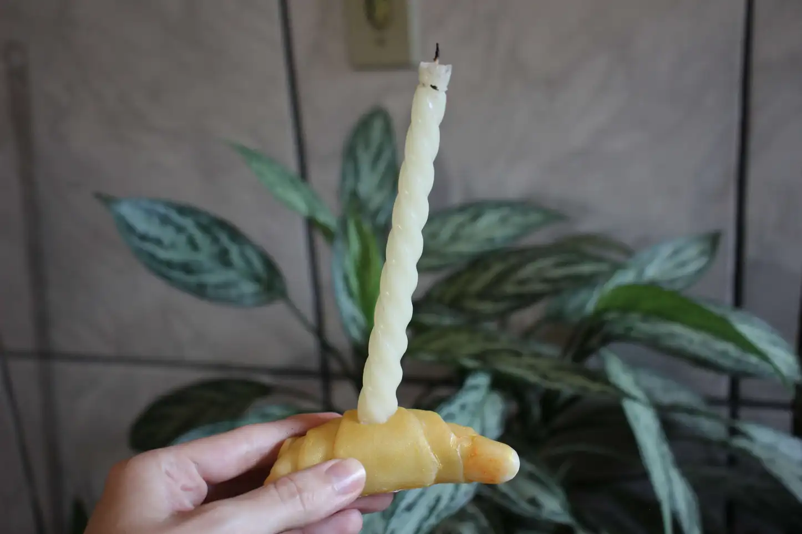
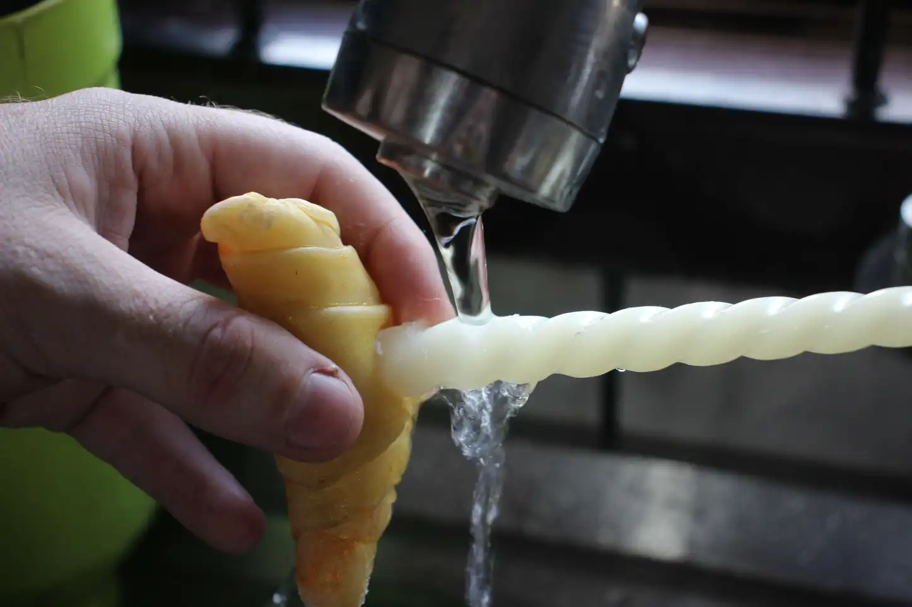

Description
Step into the realm of refined ambience as we delve into the art of mastering taper candles. These slender pillars, whether nestled in individual holders or adorning candelabras, possess a unique blend of aesthetic charm and functional elegance. Yet, the struggle arises when these seemingly poised candles decide to adopt a slouchy demeanour in their holders.
In this 5-step DIY guide, we're here to demystify the challenge and arm you with the skills needed to ensure your taper candles stand tall and exude a distinct grace. We won't just explore the subtleties of candle positioning but also unveil practical secrets to achieving a straight and upright presentation. So, gather your supplies, spark your creativity, and let's embark on this transformative journey to guarantee that your living space basks in the glow of impeccably positioned taper candles. Your home deserves nothing less than the curated elegance that well-aligned candles bring to the table.
What are the reasons why tapered candles fall?
Often, taper candles are too small to fit in candle holders. This can be due to several things, the main one being the large variety of manufacturers that create candles and candle holders, each with a different size. Additional causes of tapered candle falls could be:
The candle's base slips loosely into the holder.
The taper itself is not straight.
There is a bend in the taper candle holder.
How to make a taper candle stand straight
The steps listed below will walk you through one of the many methods for making a taper candle stand straight.
Materials
Warm water
Cold water
Candle

Here's a picture of what the candle looks like.
Step 1: Pour warm water
Heat water until it is lukewarm. Then, pour the warm water over the candle.
Step 2: Move the candle
Move the candle back and forth under the water to heat the wax.
Step 3: Straighten the candle

Use your hands to straighten the candle, bending the candle into the right shape.
Step 4: Pour cold water
Pour cold water over the candle. You can use cold tap water. The cold water will cool and harden the candle wax.
Step 5: It's done
It's done.
Other ways to make a taper candle stand straight
Finding the reason why the taper candle is not standing straight in its candle holder is one of the most crucial things to notice. Below are some possible causes and their solutions.
Possible cause: What happens when the taper candles are too small for the taper candle holders?
There are several really simple ways to mend a taper and candle holder that simply aren't meant to be together using things you probably already have in your kitchen. There are also a ton of extremely reasonably priced products made specifically to straighten leaning candles. The following list of items can help your taper candles fit the holder more snugly.
Masking tape
Aluminium foil
Candle snugglers
How to use aluminium foil
Step 1: Craft a Foil Support
Begin by cutting an aluminium foil strip to a width of three inches. Fold the foil three times, creating a one-inch broad strip.
Step 2: Secure the Base
Wrap the bottom inch of the taper candle with the folded foil strip, ensuring it measures one inch wide. Test the fit by inserting the taper into the holder; make adjustments as needed by adding or removing foil for a snug fit. Alternatively, employ multiple layers of adhesive tape around the candle's base.
Step 3: Utilize Molten Wax
Light the candle and hold it above the holder to let a few drops of molten wax fall into the holder's bottom. Quickly blow out the flame, then insert the candle into the holder, allowing the melted wax to assist in keeping it upright.
Step 4: Try Tacky Wax
For taper candle holders with a diameter slightly too small, apply a small amount of tacky wax. Place the candle's base inside the holder and leave it until the wax solidifies.
Possible cause: What happens when the taper candles are too big for the taper candle holders?
There are two extremely simple techniques to reduce the size of your taper candle's base so that it will fit into an overly tight holder. The first method is to immerse the base of your candle in some warm water for a minute to warm it up. This will sufficiently soften the wax so that the taper can be pushed into the holder without breaking or chipping the bottom.
Step 1: Warm and Soften the Wax
In a microwave-safe bowl, heat 1/2 cup of water on "High" for 45 seconds. Carefully remove the bowl and place the bottom inch of the taper candle in the warm water to soften the wax.
Step 2: Insert into Holder
Insert the softened candle base into the holder. The softened wax easily conforms to the holder. Allow the candle to sit for about five minutes until the wax solidifies, ensuring it remains straight.
Step 3: Remove Excess Wax
Wipe the area around the inserted taper candle to remove any excess wax pushed off the base. Discard the paper towel and excess wax.
Step 4: Trim the Underside
If the candle base still doesn't fit, shave a small amount around the base using a paring knife. Let the wax cool and solidify, checking frequently to ensure the right fit. Trim until the candle fits snugly in the holder.